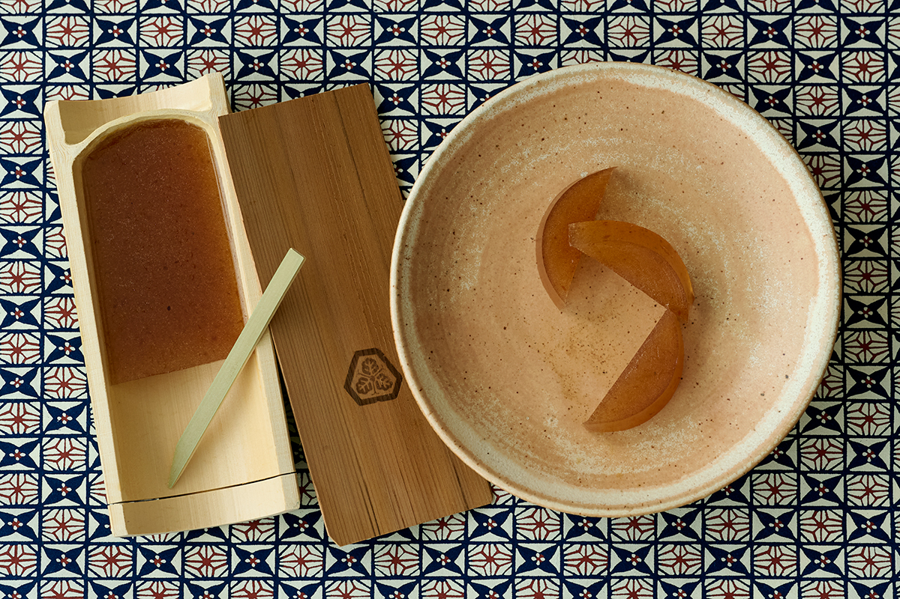
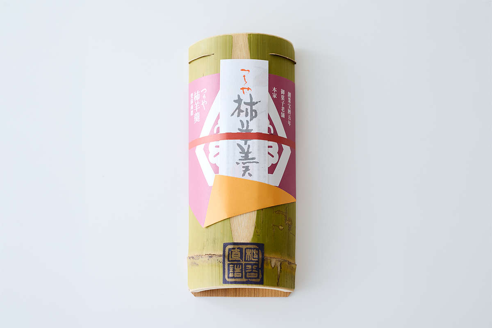
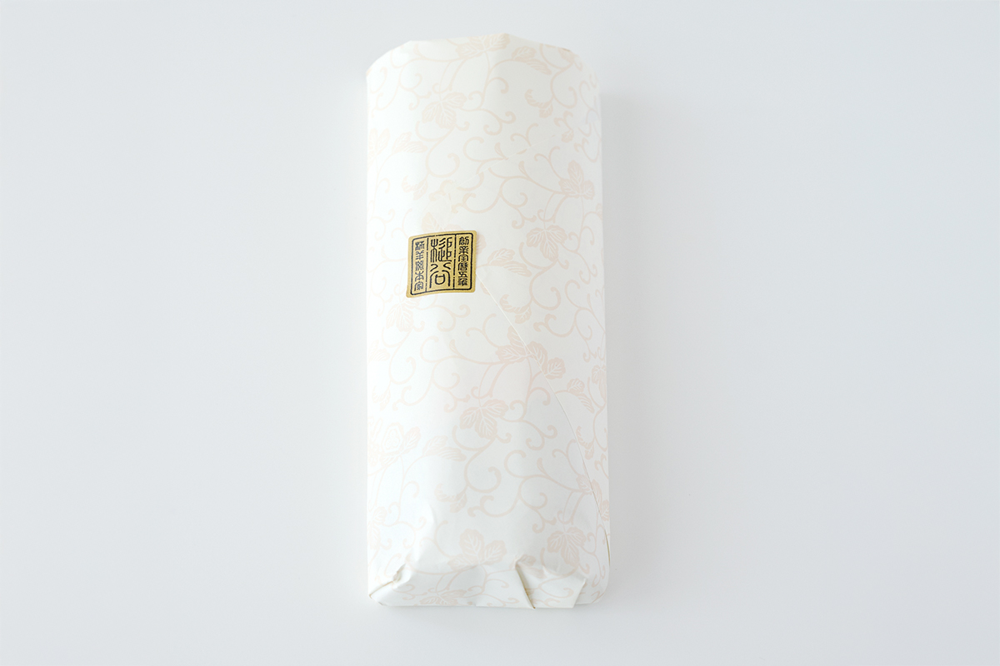
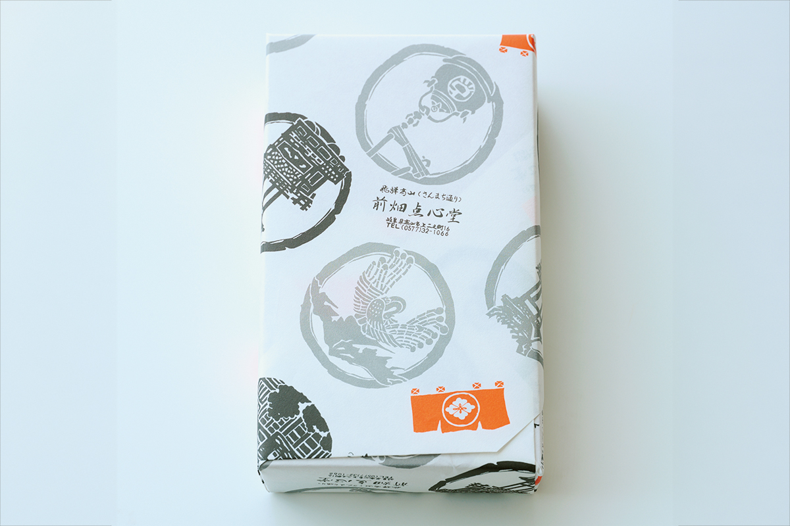
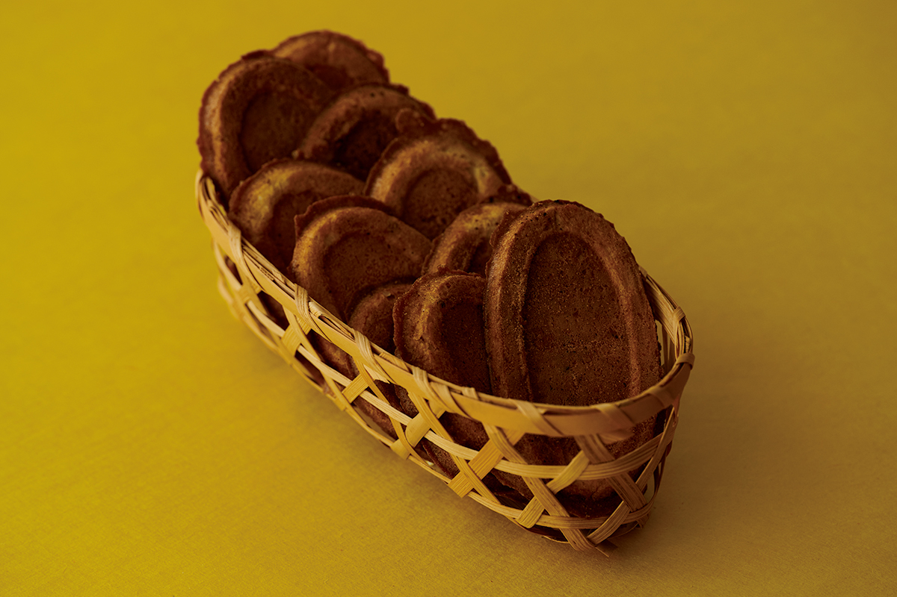
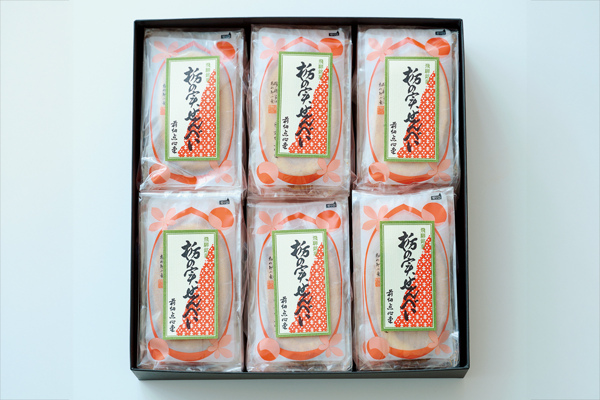

Префектура Гифу · Огаки и Такаяма · сладости
Сладости Гифу: ёкан из хурмы в бамбуке и сэмбэй из конских каштанов

Исследовательница сладостей, много лет пишущая о кондитерских изделиях и народном ремесле мингэй, выбрала в префектуре Гифу две вещи. Обе родились в старых кондитерских домах.
Огаки
«Каки ёкан» дома «Цутия»
Об ёкане из хурмы автор колонки впервые узнала из бюллетеня Токийского общества мингэй за март 1978 года. Там был отчёт о встрече «Пробуем знаменитые сладости провинции»: на фотографиях члены общества весело собрались за столом, а среди угощений был и «каки ёкан».
Его делает «Цутия», кондитерский дом из Огаки, города на западе префектуры Гифу. Дом основан в 1755 году. Бамбуковый футляр появился в 1896 году, при пятом главе дома. Идею подсказал его близкий друг, знаток бамбука: «Бамбук и хурма хорошо уживаются. Посадишь хурму, и бамбук растёт лучше, и хурма становится слаще. Двойная выгода». Так и придумали собственный бамбуковый футляр для ёкана из хурмы.


В футляр вставляют приложенную бамбуковую палочку и надрезают ёкан. Кусок выходит гладко, одним движением, и на бамбуке не остаётся ничего. Простой и удобный футляр сам по себе хорошо показывает, что в мингэй называют красотой полезной вещи, и от него трудно отвести взгляд.
По вкусу это японский пат де фрюи. Хурма чувствуется ясно, а сладость сдержанная. Зуб входит в мягкую гладкую массу без усилия. С кофе он тоже хорош.
«Цутия», главный магазин на Таварамати
- Адрес
- префектура Гифу, Огаки, Таварамати, 39
- Телефон
- +81 584-78-2111; 0120-78-5311 (бесплатный номер, только из Японии)
- Часы работы
- 9:00–17:00
- Выходные
- 1 января
- Сайт
- kakiyokan.com
Такаяма
«Тоти-но-ми сэмбэй» из «Маэхата тэнсиндо»
Такаяма, старый торговый город в горах Хида. Здесь стоит зайти в Музей народного искусства Кусакабэ занимает городской дом семьи Кусакабэ, которая разбогатела, снабжая управу в те времена, когда Хида подчинялась напрямую сёгунату. Дом считается образцом жилья эпохи Мэйдзи и охраняется государством как важное культурное достояние. Здесь можно рассматривать коллекцию и заодно увидеть одну из лучших построек Хиды. В музейной лавке продают вещи, какие есть только в Такаяме, например мягкие игрушки ручной работы из ткани, окрашенной вручную с помощью деревянных печатных досок в местной мастерской.

Если покупать в Такаяме сладкий подарок, не забудьте про «тоти-но-ми сэмбэй». Первыми их начали печь в «Маэхата тэнсиндо», кондитерской, основанной в 1895 году. Тоти, японский конский каштан, ели, как считается, ещё в эпоху Дзёмон. Во Франции его называют «маронье», и в Париже оно растёт вдоль улиц. После вымачивания, которое снимает горечь, плоды тоти по вкусу напоминают каштан, а вместе с сахаром дают глубокий вкус, похожий на японский чёрный сахар.

Сэмбэй пекут вручную по одному: они пышные, довольно толстые и милы своей простотой. Во рту они хрустят легко и приятно. Автор колонки называет их образцом вкуса ручной работы.

«Маэхата тэнсиндо»
- Адрес
- префектура Гифу, Такаяма, Ками-Ниномати, 16
- Телефон
- +81 577-32-1066
- Часы работы
- 9:00–17:00
- Выходные
- четверг
Фото: Вакана Баба.